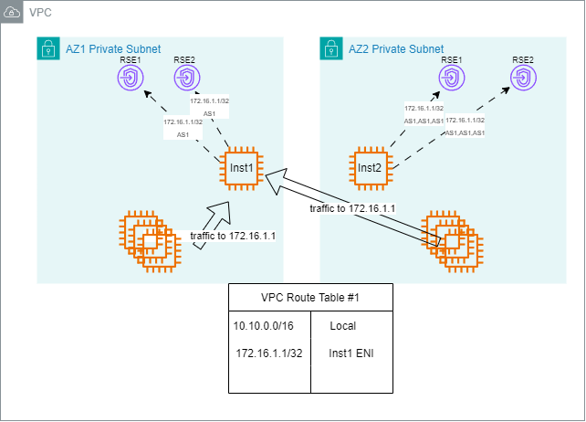
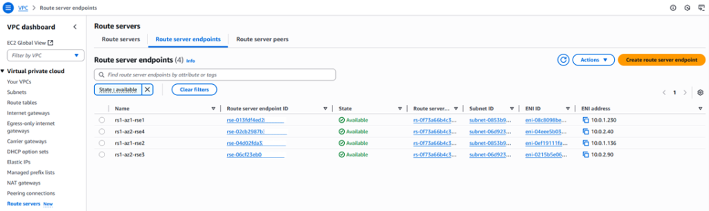
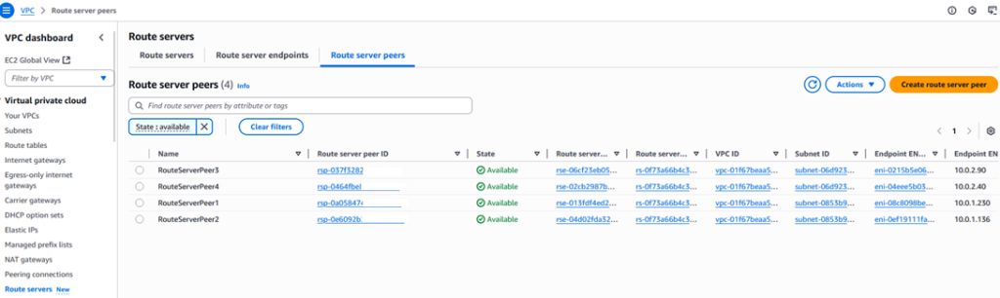
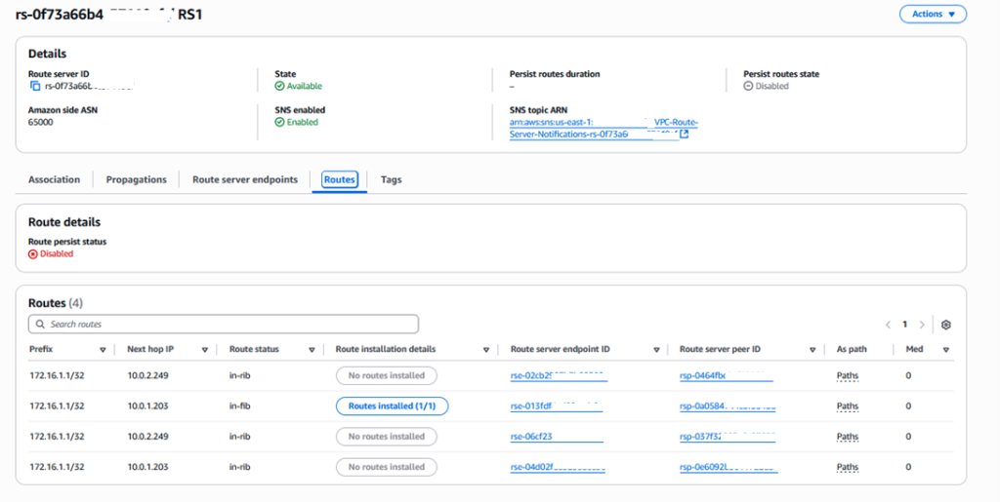
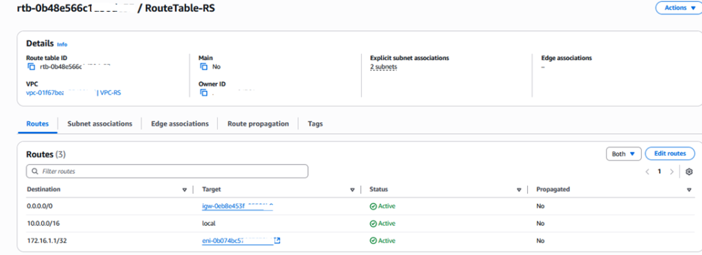
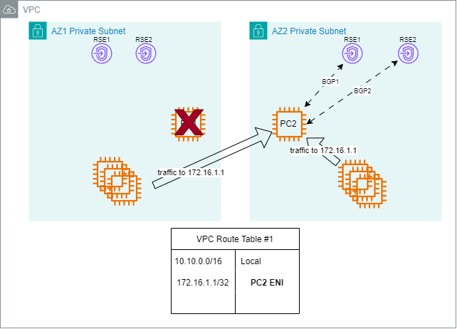
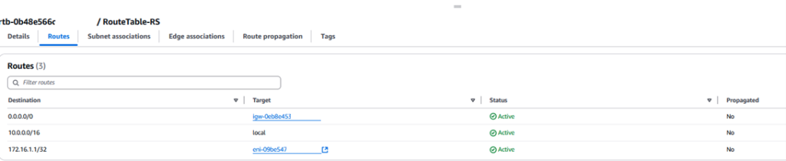
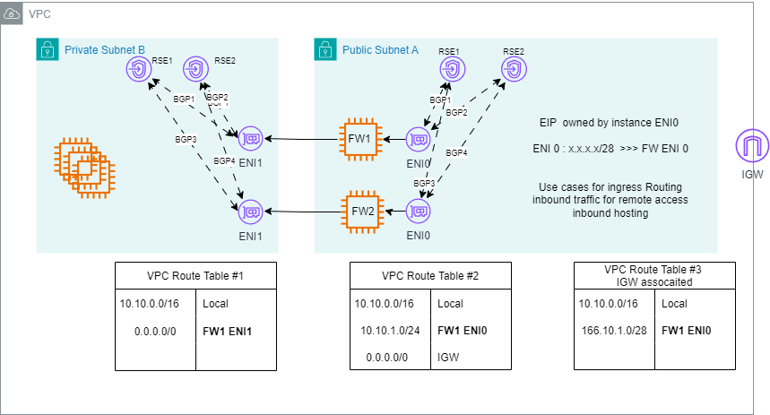
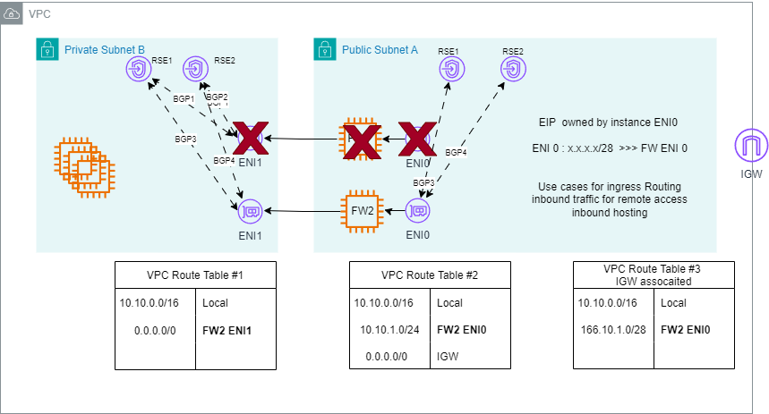

Bởi Ammar Latif và Akshay Choudhry | vào ngày 02 THÁNG 9, 2025 | trong Post Types, Architecture, Industries, Networking & Content Delivery, Technical How-to, Telecommunications | Permalink | Share
Amazon VPC Route Server cho phép định tuyến động (dynamic routing) trong Amazon Virtual Private Cloud (Amazon VPC) bằng cách sử dụng Border Gateway Protocol (BGP). Bạn có thể sử dụng Amazon VPC Route Server để kiểm soát lưu lượng mạng giữa các ứng dụng trên cloud và hệ thống on-premises một cách hiệu quả và thông minh. Amazon VPC Route Server sử dụng BGP để cung cấp khả năng kiểm soát nâng cao đối với các tuyến đường lưu lượng, đặc biệt trong các tình huống xảy ra sự cố, đồng thời giúp giảm thiểu thao tác thủ công và lỗi do con người.
Trong bài viết này, chúng ta sẽ cùng khám phá nhiều kịch bản khác nhau, nơi định tuyến động ở cấp ứng dụng (application-level dynamic routing) ảnh hưởng đến việc truyền tải lưu lượng đến các instance, cũng như cách hệ thống xử lý tình huống failover với mức độ gián đoạn tối thiểu.
Giả định rằng bạn đã quen thuộc với các khái niệm về mạng AWS liên quan đến tính sẵn sàng cao (high availability) và cơ chế failover, chẳng hạn như Amazon Elastic Compute Cloud (Amazon EC2), Elastic Network Interfaces (ENIs), Amazon VPC, VPC routing tables, và AWS Availability Zones (AZs). Cũng giả định rằng bạn hiểu các khái niệm cơ bản về mạng như IP addressing, CIDR blocks, network routing, BGP (Border Gateway Protocol) và Bidirectional Forwarding Detection (BFD). Bài viết này không tập trung vào việc định nghĩa những dịch vụ và khái niệm cơ bản đó, mà thay vào đó sẽ minh họa cách chúng có thể được sử dụng để triển khai giải pháp floating IP cho failover của ứng dụng. Để tìm hiểu thêm về các kiến thức nền tảng trong mạng AWS, bạn nên tham khảo tài liệu AWS về VPC networking và các bài viết thuộc chuyên mục AWS Networking and Content Delivery.
Đối với chi tiết về các khái niệm VPC Route Server, vui lòng tham khảo tài liệu hướng dẫn Getting started tại đây.
Lưu lượng bên trong Amazon VPC được điều khiển bởi route tables. Các route tables này được gắn với subnets, Internet Gateways (IGWs) và Virtual Private Gateways, cho phép bạn xác định đường đi của lưu lượng trước khi nó đến được đích.
Ví dụ, bạn có thể định nghĩa các tuyến trong IGW route table để hướng lưu lượng đi qua firewall trước khi đến điểm đích mong muốn.
Tương tự, bạn có thể định tuyến lưu lượng từ các subnet đến NAT Gateway, IGW, Peering Connections, hoặc Virtual Private Gateway tùy thuộc vào trường hợp sử dụng (use case).
Có những tình huống mà các ứng dụng (chẳng hạn như ứng dụng bảo mật hoặc xử lý mạng) cần kiểm soát chi tiết (fine-grain control) đường đi của lưu lượng để ảnh hưởng đến cách lưu lượng được gửi đến ứng dụng trước khi đến đích cuối cùng. Các ứng dụng này thường nằm giữa nguồn (source) và đích (destination) của lưu lượng mạng nhằm cung cấp các dịch vụ liên quan đến mạng.
Một ví dụ phổ biến là chuyển hướng lưu lượng đến thiết bị bảo mật (security appliance) để kiểm tra lưu lượng (traffic inspection) trước khi gửi đến đích thực tế.
Mặc dù static routes có thể được dùng để định tuyến lưu lượng đến các thiết bị bảo mật hoặc middleboxes, chúng có những hạn chế đáng kể (trừ khi được sử dụng cùng Gateway Load Balancer (GWLB)). Static routes yêu cầu can thiệp thủ công khi xảy ra sự cố, không tự động thích ứng với thay đổi mạng, và trở nên phức tạp hơn khi quy mô mạng mở rộng.
Việc quản lý thủ công này làm tăng nguy cơ lỗi do con người và kéo dài thời gian khôi phục (recovery time) trong trường hợp gián đoạn.
Dynamic routing giải quyết những thách thức đó bằng cách tự động cập nhật route tables, cung cấp khả năng mở rộng tốt hơn và kích hoạt cơ chế failover — tất cả mà không cần can thiệp thủ công.
Lưu ý: AWS luôn khuyến nghị sử dụng GWLB để đảm bảo tính sẵn sàng cao (high availability) và khả năng dự phòng (redundancy). Bạn chỉ nên xem xét giải pháp này nếu đang sử dụng EC2 instances với ứng dụng không hỗ trợ GWLB cho mục đích inspection.
VPC Route Server cung cấp khả năng định tuyến động (dynamic routing) trong VPC bằng cách sử dụng giao thức định tuyến BGP (Border Gateway Protocol). Các ứng dụng mạng (networking applications) có thể sử dụng BGP để cập nhật các VPC route tables, cho phép kiểm soát chi tiết lưu lượng bên trong VPC và tự động thực hiện failover giữa các instance được triển khai trong cùng hoặc khác AZ (Availability Zone). VPC Route Server có thể tự động cập nhật các VPC và IGW route tables với các route ưu tiên cho IPv4 hoặc IPv6 nhằm đạt được khả năng chịu lỗi định tuyến (routing fault tolerance) cho các workload. Khi xảy ra sự cố, hệ thống có thể tự động định tuyến lại lưu lượng bên trong VPC, giúp nâng cao khả năng quản lý (manageability) và cải thiện khả năng tương tác (interoperability) với các workload của bên thứ ba. Khả năng này được thể hiện rõ trong các kịch bản mà khi một AZ gặp sự cố, hệ thống có thể chuyển hướng lưu lượng đến tài nguyên trong AZ khác, và các route tables sẽ được tự động cập nhật để phản ánh đường đi mạng mới.
Trong các phần sau, chúng ta sẽ thảo luận chi tiết hơn về các khả năng định tuyến của VPC Route Server.
Trong kịch bản này, chúng ta sẽ minh họa cách địa chỉ IP nổi (floating IP) có thể được sử dụng để đạt được failover liền mạch (seamless failover) giữa hai EC2 instance được triển khai trên hai AZ khác nhau trong một kiến trúc có tính sẵn sàng cao (highly available architecture).
Bạn có một ứng dụng quan trọng với doanh nghiệp (business-critical application) đang chạy trên một EC2 instance trong AZ1. Một EC2 instance dự phòng (standby) được triển khai trong AZ2 để đảm bảo tính sẵn sàng cao. Ứng dụng của bạn không được tích hợp với GWLB, hoặc GWLB không khả dụng trong môi trường AWS (chẳng hạn như Local Zone).
Mục tiêu của bạn là đảm bảo cơ chế high availability cho ứng dụng trong trường hợp instance chính hoặc AZ của nó gặp sự cố.
Bạn có thể sử dụng AWS CloudFormation trong aws-samples repo để triển khai Kịch bản #1 trong tài khoản AWS của mình. Mẫu CloudFormation template này sẽ tạo ra cấu hình sau:
VPC với ba subnet trải rộng trên hai AZ
VPC route table cho ba subnet được tạo
Tạo và gắn IGW vào VPC, đồng thời tạo default route đến IGW trong VPC route table
Tạo và gắn route server vào VPC — route server này sử dụng ASN 65000
Tạo hai VPC Route Server endpoints (RSEs) trong mỗi subnet (để đảm bảo high availability)
Tạo các route server peers
Tạo hai instance để mô phỏng ứng dụng high availability cần kiểm thử, sử dụng Gobgp software
Mỗi instance chạy BGP với ASN 65001 và thiết lập peering với RSEs trong subnet tương ứng
Cấu hình Gobgp được định sẵn trong user-data của các instance và lưu trong file gobgpd.conf tại thư mục /home/ec2-user
Tạo một test instance để ping đến loopback IP của ứng dụng high availability đang được kiểm thử
Bạn có thể sử dụng AWS Systems Manager để truy cập các instance đã được tạo
Chúng ta sử dụng một địa chỉ IP nổi (floating IP) được cấp phát từ một dải CIDR ngoài VPC (non-VPC CIDR range) và được ứng dụng sử dụng. Client sẽ sử dụng địa chỉ IP này để truy cập ứng dụng.
Khi instance chính gặp sự cố, lưu lượng đến địa chỉ floating IP sẽ được định tuyến lại (rerouted) đến ENI của instance dự phòng trong AZ thứ hai.
Cách tiếp cận này giúp giảm thiểu sự gián đoạn trong tính sẵn sàng của ứng dụng bằng việc sử dụng cơ chế floating IP kết hợp với dynamic VPC routing, mà không cần cập nhật cấu hình client hoặc can thiệp thủ công.

Hình 1. Instance#1 đang hoạt động (active)
Như thể hiện trong Hình 1, ứng dụng hoạt động theo mô hình active/standby trên hai AZ.
Cả hai EC2 instance đều quảng bá cùng một địa chỉ loopback IP (ví dụ: 172.16.1.1/32) ra mạng thông qua BGP peering với hai VPC RSE được đặt trong cùng một subnet.
Hai RSE này được sử dụng để đảm bảo tính dự phòng (redundancy) và nâng cao khả năng sẵn sàng (availability) của dịch vụ định tuyến (routing services).

Hình 2. Các VPC Route Server endpoint
Hình 3. Các VPC Route Server peer
Hình 4. Bảng RIB của Route Server (Route Server RIB table)Để đảm bảo rằng lưu lượng được định tuyến đến instance đang hoạt động (active instance), ứng dụng sử dụng thuộc tính BGP AS Path. Instance hoạt động sẽ quảng bá route với AS Path ngắn hơn, trong khi instance dự phòng (standby) sẽ thêm các AS number khác, khiến đường đi của nó kém ưu tiên hơn. BGP luôn chọn đường đi có AS Path ngắn nhất, đảm bảo rằng instance hoạt động được chọn làm đường đi ưu tiên. Các thuộc tính BGP khác như Multi-Exit Discriminator (MED) cũng có thể được sử dụng để đạt được mức độ ưu tiên định tuyến tương tự.

Hình 5. Bảng định tuyến VPC (VPC route table) được cập nhật với 172.16.1.1/32 trỏ đến ENI của instance đang hoạt độngBạn có thể kiểm tra cấu hình Gobgp bằng cách kết nối đến một trong hai instance (instance-rs-az1 hoặc instance-rs-az2) thông qua EC2 Session Manager.
Cấu hình Gobgp nằm tại đường dẫn /home/ec2-user/gobgpd.conf.
Bash-5.2$ sudo more /home/ec2-user/gobgpd.conf
[global.config]
as = 65001
router-id = “10.0.1.203”
[[neighbors]]
[neighbors.config]
neighbor-address = “10.0.1.230”
peer-as = 65000
[[neighbors.afi-safis]]
[neighbors.afi-safis.config]
afi-safi-name = “ipv4-unicast”
[[neighbors]]
[neighbors.config]
neighbor-address = “10.0.1.136”
peer-as = 65000
[[neighbors.afi-safis]]
[neighbors.afi-safis.config]
afi-safi-name = “ipv4-unicast”
Sử dụng lệnh sau để kiểm tra trạng thái BGP neighbor.
Sẽ có hai neighbor tương ứng với hai VPC RSE trong subnet của instance.
sh-5.2$ sudo /home/ec2-user/gobgp neighbor
Peer AS Up/Down State |#Received Accepted
10.0.1.136 65000 22:43:07 Establ | 0 0
10.0.1.230 65000 22:43:08 Establ | 0 0
Kiểm tra xem route của loopback có đang được quảng bá (advertised) thông qua BGP hay không.
sh-5.2$ sudo /home/ec2-user/gobgp global rib
Network Next Hop AS_PATH Age Attrs
*> 172.16.1.1/32 0.0.0.0 22:42:21 [{Origin: ?}]
Để kiểm tra thiết lập định tuyến, bạn có thể truy cập vào instance kiểm thử “test-instance” bằng phương pháp Systems Manager.
Khi đã đăng nhập, bạn có thể ping đến địa chỉ 172.16.1.1, và bạn sẽ nhận được phản hồi từ instance đang hoạt động “instance-rs-az1”.
sh-5.2$ ping 172.16.1.1
PING 172.16.1.1 (172.16.1.1) 56(84) bytes of data.
64 bytes from 172.16.1.1: icmp_seq=1 ttl=127 time=0.712 ms
64 bytes from 172.16.1.1: icmp_seq=2 ttl=127 time=0.338 ms
64 bytes from 172.16.1.1: icmp_seq=3 ttl=127 time=0.378 ms
Phát hiện và khôi phục khi xảy ra failover
Để mô phỏng quá trình failover, bạn có thể tắt (shut down) instance đang hoạt động (instance-rs-az1).
Để kiểm tra cấu hình định tuyến, bạn có thể truy cập vào test instance “test-instance” bằng phương thức Systems Manager.
Khi đã đăng nhập, hãy ping đến địa chỉ 172.16.1.1, và bạn sẽ nhận được phản hồi từ instance hiện đang hoạt động “instance-rs-az2.
sh-5.2$ ping 172.16.1.1
PING 172.16.1.1 (172.16.1.1) 56(84) bytes of data.
64 bytes from 172.16.1.1: icmp_seq=1 ttl=127 time=0.712 ms
64 bytes from 172.16.1.1: icmp_seq=2 ttl=127 time=0.338 ms
64 bytes from 172.16.1.1: icmp_seq=3 ttl=127 time=0.378 ms
Để đảm bảo phát hiện sự cố một cách nhanh chóng, giao thức BFD (Bidirectional Forwarding Detection) có thể được kích hoạt giữa ứng dụng và các RSE.
BFD giúp giảm đáng kể thời gian cần thiết để phát hiện lỗi liên kết hoặc lỗi của ứng dụng.

Hình 6. Instance #2 đảm nhiệm vai trò active
Hình 7. Bảng định tuyến (route table) được cập nhật để trỏ đến ENI của Instance #2Kịch bản này minh họa một phương pháp mạnh mẽ để triển khai cơ chế failover dựa trên địa chỉ IP động (floating IP) trong AWS, bằng cách sử dụng các giao thức định tuyến tiêu chuẩn như BGP và BFD.
Giải pháp này cho phép failover nhanh chóng, đáng tin cậy và minh bạch giữa các AZ, mà không cần cập nhật DNS hay can thiệp thủ công.
Đây là giải pháp lý tưởng cho các workload yêu cầu tính sẵn sàng cao (high availability), thời gian gián đoạn tối thiểu, và khả năng chịu lỗi tối đa (maximum resiliency).
Hãy xem xét kịch bản trong đó bạn có một mô hình bảo mật tập trung, nơi các thiết bị tường lửa (firewall appliances) — được triển khai dưới dạng EC2 instances — có nhiệm vụ kiểm tra toàn bộ lưu lượng north-south hoặc east-west trong VPC.
Các firewall này đóng vai trò quan trọng trong tư thế bảo mật (security posture) của bạn và phải luôn sẵn sàng để kiểm tra và chuyển tiếp lưu lượng.
Để duy trì tính sẵn sàng cao, bạn triển khai hai firewall EC2 instances ở hai AZ khác nhau.
Mục tiêu của bạn là đảm bảo rằng nếu firewall chính (active) gặp sự cố, thì lưu lượng sẽ được chuyển hướng liền mạch sang firewall dự phòng (standby).
Trong kịch bản này, chúng ta sẽ trình bày cách triển khai cơ chế high availability và failover cho các firewall dạng stateful được triển khai trên nhiều AZ trong AWS, bằng cách sử dụng VPC Route Server và các bản cập nhật định tuyến động (dynamic route updates).
Hình dưới đây minh họa một thiết bị firewall được cài đặt trên một EC2 instance trong subnet A.
Thiết bị này kiểm tra toàn bộ lưu lượng đi từ IGW đến subnet B (application subnet) và từ subnet B đến IGW.

Hình 8. Kịch bản #2 — Firewall #1 đang ở trạng thái activeMỗi firewall sẽ thiết lập bốn phiên BGP (BGP sessions):
hai phiên cho subnet A và hai phiên cho subnet B, bao gồm cả bảng định tuyến (route tables) của application subnet và IGW.
Để đảm bảo rằng chỉ một firewall được sử dụng tại một thời điểm, ưu tiên đường đi BGP (BGP path preference) sẽ được điều chỉnh bằng các tham số (metrics) của BGP.
Chúng ta sẽ tập trung vào các metric sau đây:
AS_Path: Là thuộc tính BGP hiển thị chuỗi các số hiệu hệ thống tự trị (Autonomous System numbers) mà một route đã đi qua. Thuộc tính này vừa đóng vai trò ngăn chặn vòng lặp (loop prevention), vừa là tiêu chí lựa chọn đường đi, trong đó đường có AS_Path ngắn hơn sẽ được ưu tiên.
MED (Multi-Exit Discriminator): Là thuộc tính BGP được sử dụng để ảnh hưởng đến lưu lượng vào (inbound traffic) bằng cách gợi ý điểm vào ưu tiên khi có nhiều kết nối giữa hai hệ thống tự trị (autonomous systems).
Giá trị MED càng thấp thì đường đi càng được ưu tiên.
Firewall đang hoạt động (active firewall) sẽ quảng bá (advertise) các prefix với các thuộc tính BGP được ưu tiên cao nhất,
trong khi firewall dự phòng (standby firewall) cũng quảng bá cùng các prefix đó, nhưng với thuộc tính kém ưu tiên hơn.
Trong kịch bản này, chúng ta sử dụng kỹ thuật AS Path Prepending, nghĩa là firewall dự phòng sẽ thêm nhiều AS number hơn khi quảng bá prefix đến RSE, khiến đường đi của nó kém ưu tiên hơn.
Các route table gắn với IGW kiểm soát đường đi của lưu lượng Internet inbound bên trong VPC.
Người dùng thường sử dụng bảng này để chèn firewall hoặc các chức năng mạng ảo khác (Virtual Network Functions) vào đường đi của lưu lượng Internet vào.
Cả firewall active và firewall standby đều thiết lập peering với VPC Route Server và quảng bá (advertise) CIDR của application subnet đến RSEs.
Tuy nhiên, firewall standby sẽ quảng bá route với AS Path dài hơn.
VPC Route Server sẽ chạy thuật toán chọn đường đi tối ưu (BGP Best Path Selection) và cài đặt route được quảng bá bởi firewall active.
Bảng định tuyến cho subnet của IGW có route như sau:
Application subnet CIDR -–> Active Firewall ENI.
VPC sẽ định tuyến (route) toàn bộ lưu lượng đi đến application subnet đến ENI của firewall đang hoạt động (Active Firewall ENI).
Cả firewall active và firewall standby đều thiết lập peering với VPC Route Server và quảng bá (advertise) route 0.0.0.0/0 đến RSEs.
Tuy nhiên, firewall standby sẽ quảng bá 0.0.0.0/0 với AS Path dài hơn, khiến route của nó ít được ưu tiên hơn.
VPC Route Server sau đó chạy thuật toán chọn đường đi tối ưu của BGP (BGP Best Path Selection) và cài đặt route được quảng bá bởi firewall active.
Bảng định tuyến cho application subnet sẽ có route như sau:
0.0.0.0/0 -–> Active FW ENI.
Route này sẽ định tuyến lưu lượng từ các application server đến firewall đang hoạt động (active firewall) trước khi lưu lượng được gửi ra Internet.
Bảng định tuyến cho provider subnet (subnet nơi firewall được triển khai) sẽ bao gồm các route tĩnh (static routes) như sau:
0.0.0.0/0 -–> igw-id
Route này sẽ định tuyến toàn bộ lưu lượng đến IGW.
BFD (Bidirectional Forwarding Detection) được kích hoạt trên từng phiên BGP giữa các firewall và các VPC RSE.
BFD cho phép phát hiện sự cố cực nhanh — thường dưới 1 giây — bằng cách liên tục trao đổi các gói tin điều khiển (control packets).
Khi xảy ra sự cố với firewall, quá trình sau sẽ diễn ra:
BFD phát hiện ra sự cố của phiên BGP giữa firewall đang hoạt động (active firewall) và các RSE.
RSEs đánh dấu phiên BGP này ở trạng thái DOWN.
RSEs rút lại (withdraw) các route ưu tiên — bao gồm cả các prefix nội bộ và bên ngoài — mà firewall bị lỗi đã quảng bá trước đó.
Quá trình BGP re-convergence được kích hoạt — RSEs sẽ chọn route thay thế (standby route) được quảng bá bởi firewall còn hoạt động (healthy firewall).
Route mới này sẽ trở thành route active trong mặt điều khiển định tuyến của VPC (VPC routing control plane).
Lưu lượng được tự động chuyển hướng sang firewall dự phòng (standby firewall).

Hình 9. Sự cố của Firewall #1 khiến lưu lượng được định tuyến lại sang Firewall #2Khi firewall bị lỗi được khôi phục và thiết lập lại các phiên BGP và BFD:
Nó sẽ tiếp tục quảng bá các thuộc tính BGP ưu tiên (preferred BGP attributes).
RSEs sẽ phát hiện route có độ ưu tiên cao hơn và chuyển lưu lượng trở lại firewall đã khôi phục.
Quá trình này có thể được tự động hóa hoặc kiểm soát thông qua chính sách quản trị (admin policy) — ví dụ: preemptive hoặc non-preemptive failover.
Hội tụ nhanh (Fast convergence): Phát hiện sự cố trong chưa đến 1 giây nhờ BFD.
Tự động hoàn toàn (Fully automated): Không cần script hoặc can thiệp thủ công.
Khả năng mở rộng (Scalable): Hoạt động với nhiều prefix và nhiều instance.
Kiểm soát thuần đám mây (Cloud-native control): Tích hợp trực tiếp với lớp định tuyến của VPC.
Tuân thủ chuẩn giao thức (Protocol standardization): Sử dụng hành vi BGP tiêu chuẩn trong ngành.
Quá trình tái hội tụ định tuyến (Routing re-convergence) có thể gây ra một khoảng downtime ngắn.
→ Hãy xem xét sử dụng GWLB (Gateway Load Balancer) làm lựa chọn ưu tiên cho failover ứng dụng nếu ứng dụng của bạn tích hợp với GWLB.
Đảm bảo rằng tính năng route propagation được tắt nếu bạn đang quản lý route thủ công.
Sử dụng BFD hoặc các công cụ phát hiện lỗi nhanh khác để đạt được tốc độ hội tụ nhanh hơn.
Đảm bảo đường định tuyến đối xứng (symmetric routing) nếu bạn đang thực hiện kiểm tra đường quay lại (return-path inspection).
Bật cơ chế giám sát và cảnh báo (monitoring and alerting) để theo dõi tình trạng hệ thống, thay đổi route, và các sự kiện failover.
Trong bài viết này, chúng ta đã khám phá cách sử dụng Amazon VPC Route Server để xây dựng kiến trúc mạng có khả năng mở rộng (scalable), chịu lỗi (fault-tolerant) và an toàn (secure) trong môi trường đám mây, bằng cách kích hoạt cơ chế failover cho các ứng dụng quan trọng và triển khai các kiến trúc high availability.
Chúng ta đã đi qua hai mô hình kiến trúc khác nhau, kèm theo chi tiết triển khai thực tế.
VPC Route Server mở khóa các khả năng định tuyến nâng cao trong AWS, bằng cách tích hợp các giao thức tiêu chuẩn của ngành như BGP và BFD vào mạng VPC gốc (native VPC networking).
Để bắt đầu sử dụng VPC Route Server ngay hôm nay, bạn có thể tham khảo tài liệu hướng dẫn documentation và hướng dẫn khởi đầu Get started tutorial của Amazon VPC Route Server.
Cập nhật ngày 15 tháng 9 năm 2025: Phiên bản trước của bài viết này bao gồm các hình minh họa sử dụng biểu tượng AWS cũ. Bài viết đã được cập nhật lại để phản ánh bộ biểu tượng kiến trúc AWS hiện tại.
About the authors
Ammar Latif Ammar là một Principal Solutions Architect trong AWS Worldwide Telecom Business Unit. Anh thích giúp khách hàng sử dụng các công nghệ cloud để giải quyết những thách thức trong kinh doanh. Trong suốt sự nghiệp của mình, Ammar đã hợp tác với nhiều khách hàng trong lĩnh vực Telecom và Media trên toàn cầu. Anh có bằng Tiến sĩ (Ph.D.) từ New Jersey Institute of Technology.
Akshay là một Principal Product Manager trong Networking and Security Services Team tại Amazon Web Services. Anh tập trung vào việc làm cho Virtual Private Cloud (VPC) trở nên trực quan và an toàn hơn cho hàng triệu khách hàng đang vận hành workloads của họ trên AWS. Trong thời gian rảnh, anh thích khám phá thiên nhiên, thử các nhà hàng mới và dành thời gian cho bạn bè cùng gia đình.
TAGS: Amazon VPC, AWS CloudFormation, BGP